№ 81–100
Соуси
до м’яса, пасти, салатів
✓ 2 рецепти розділу відкриті безкоштовно · 🔒 решта — за підпискою 150 грн/міс (фото й КБЖВ — для всіх)
20 з 20
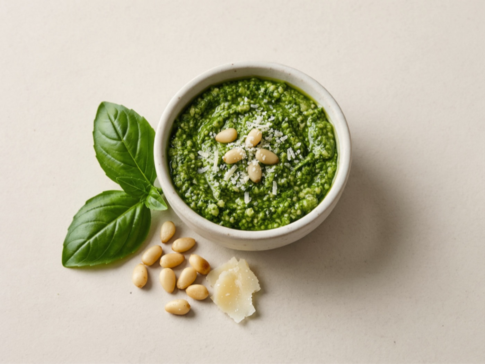
Соуси · № 081★
Песто з базиліком

Соуси · № 082★
Бешамель

Соуси · № 083★
Томатний соус маринара

Соуси · № 084★
Голландський соус

Соуси · № 085★
Тзатзикі
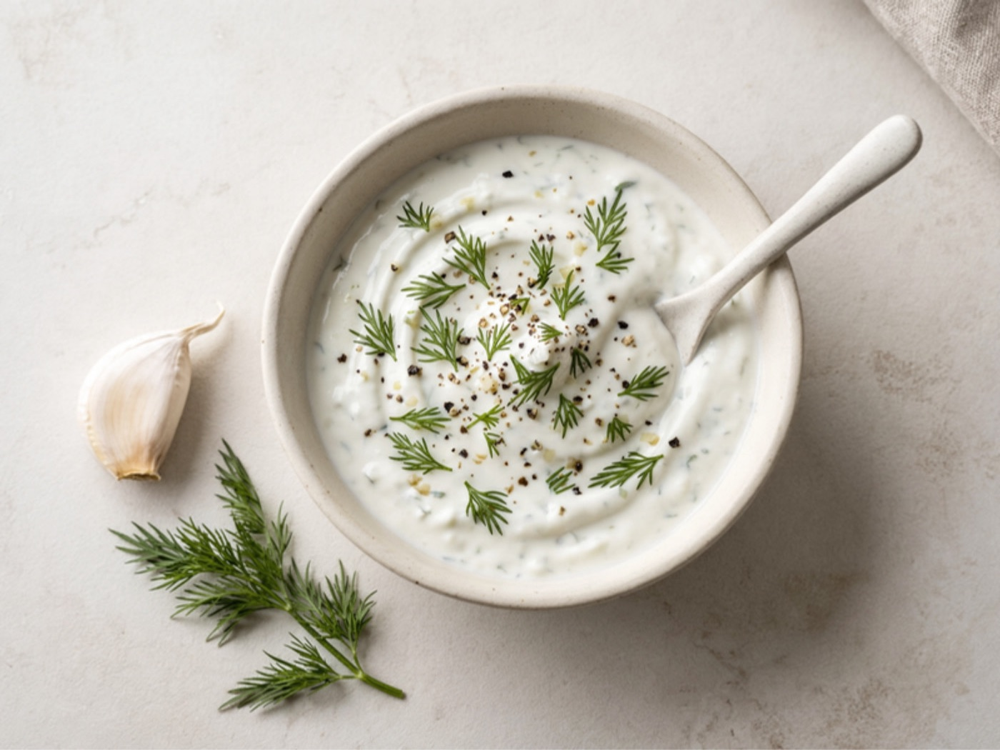
Соуси · № 086★
Часниковий соус на сметані
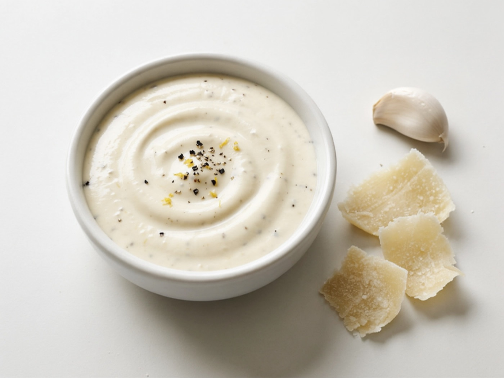
Соуси · № 087★
Соус «Цезар»
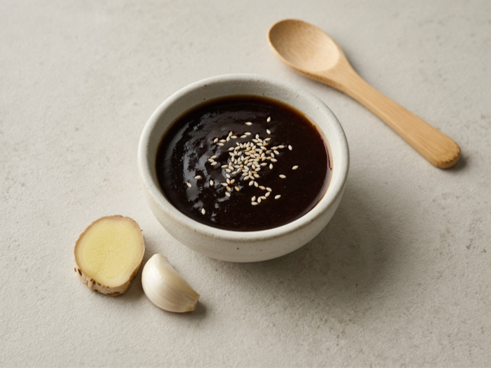
Соуси · № 088★
Теріякі

Соуси · № 089★
Медово-гірчичний соус

Соуси · № 090★
Сальса піко де гальо
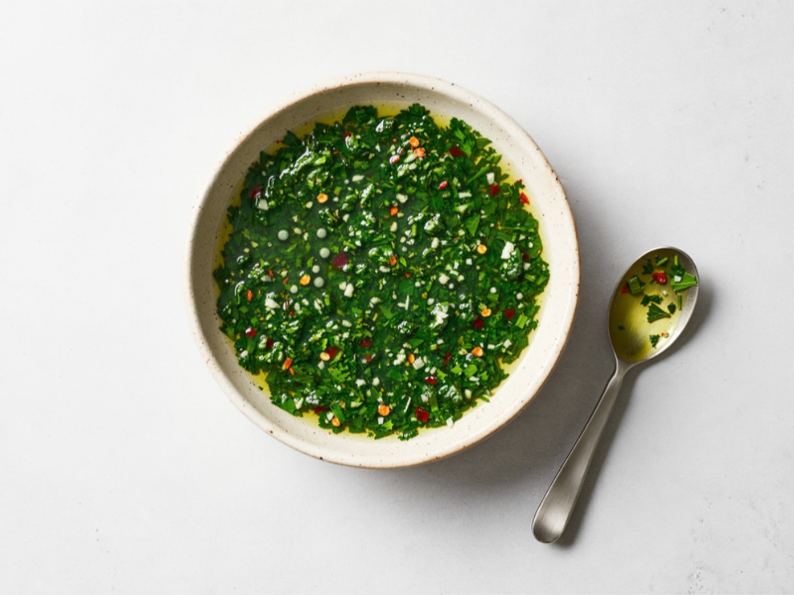
Соуси · № 091★
Чимічурі

Соуси · № 092★
Сирний соус
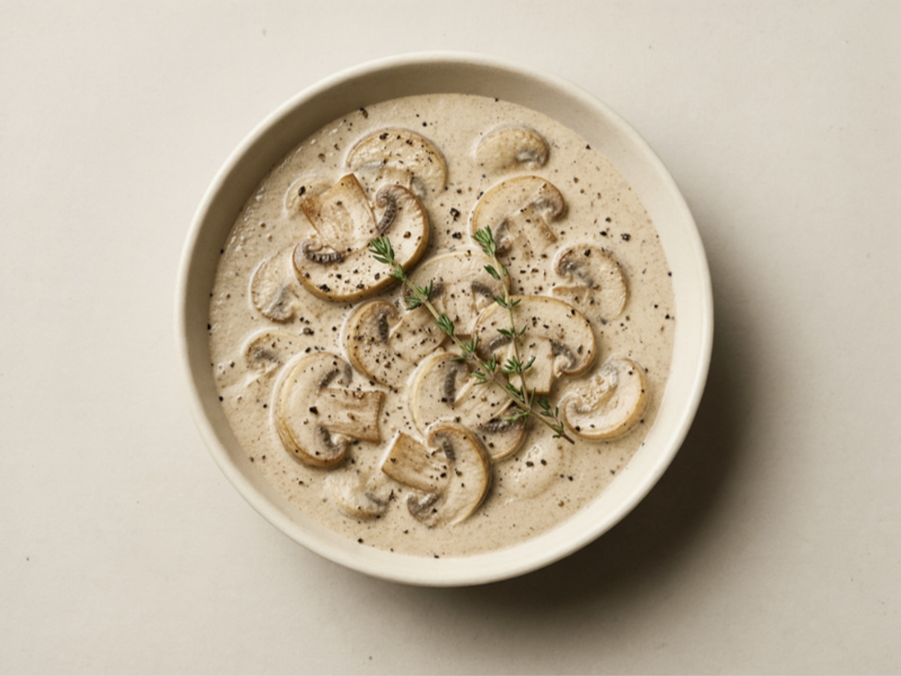
Соуси · № 093★
Вершково-грибний соус
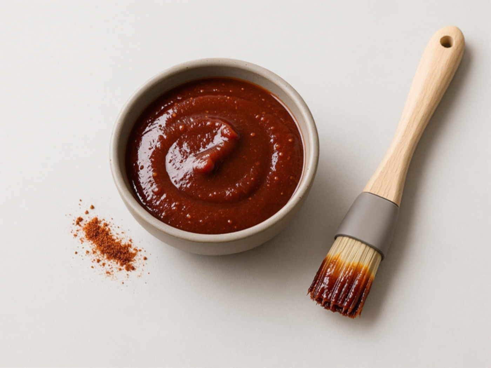
Соуси · № 094★
Домашній барбекю
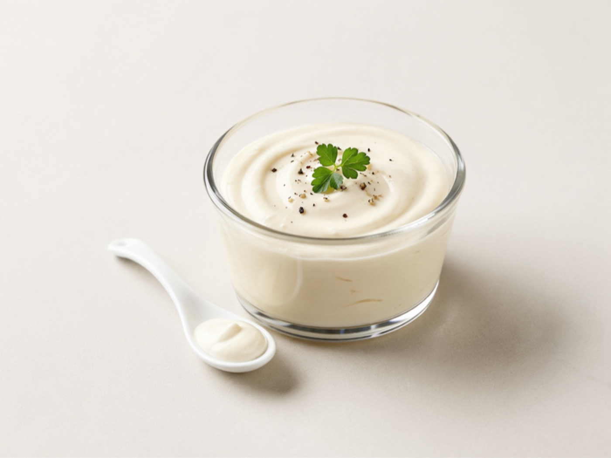
Соуси · № 095★
Домашній майонез

Соуси · № 096★
Соус тахіні
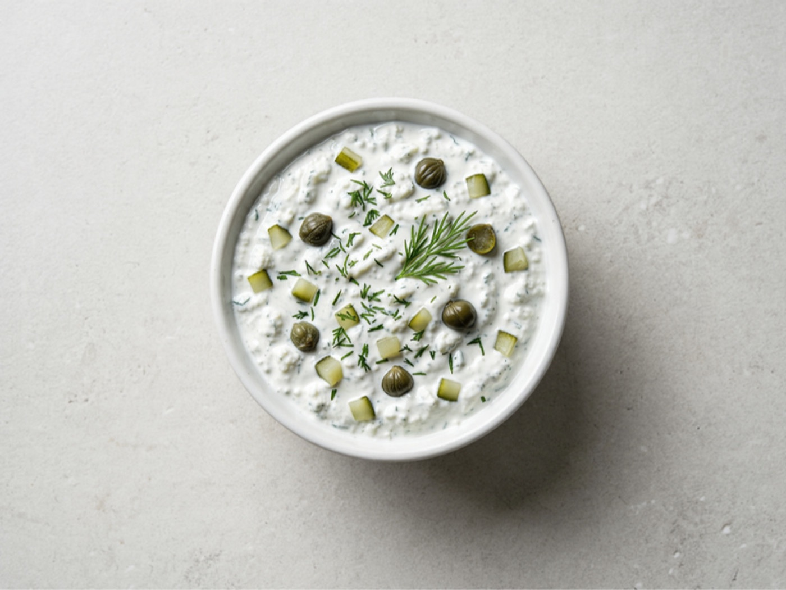
Соуси · № 097★
Соус тартар
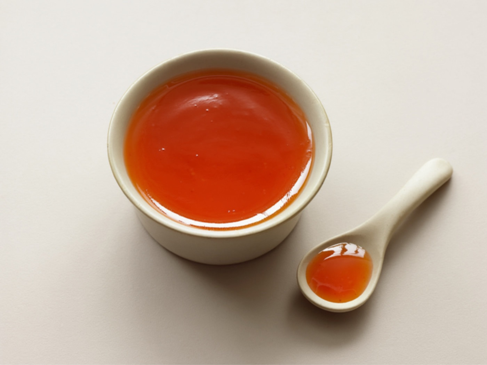
Соуси · № 098★
Кисло-солодкий соус
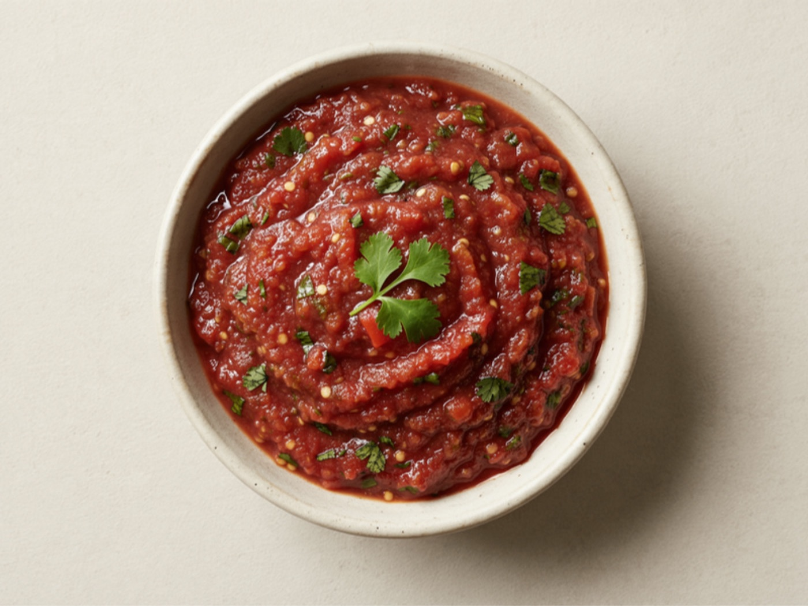
Соуси · № 099★
Свіжа аджика
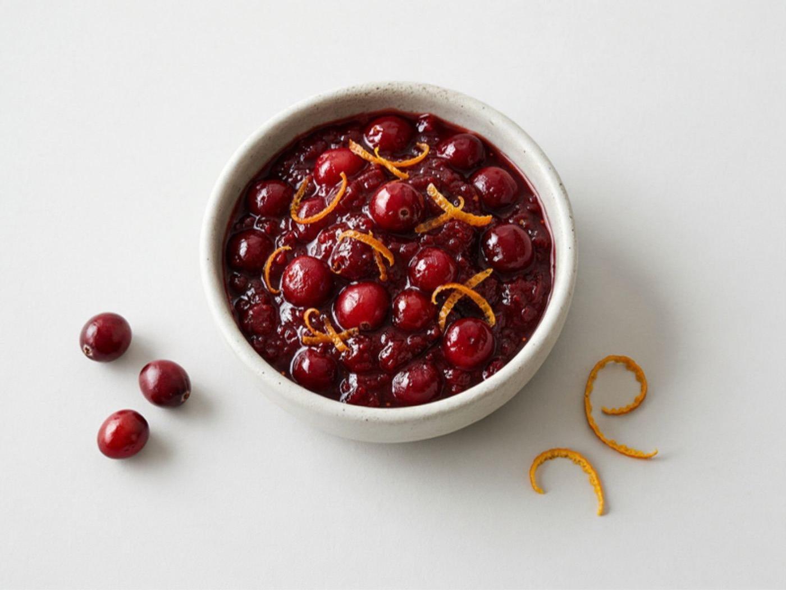
Соуси · № 100★